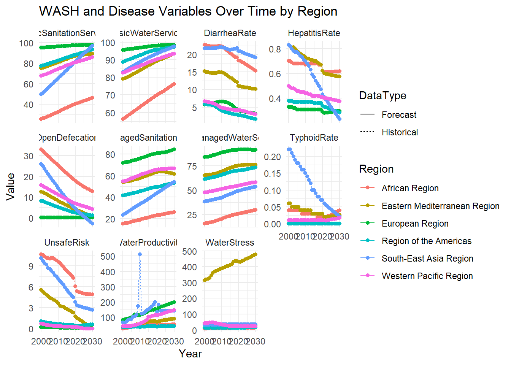

pacman::p_load(tidyverse, ggplot2, plm,ExPanDaR,lubridate, ggthemes, plotly,dplyr,purrr,forecast)Health Trend Analysis
1. Overview
In this analysis, I will explore the forecasting of health outcomes related to WASH (Water, Sanitation, and Hygiene) indicators using Panel Linear Models (PLM) and Time-series analysis (ARIMA). The goal is to project future trends in diseases such as Diarrhea, Typhoid, and Hepatitis across different WHO regions, based on the impact of WASH-related factors like water access, sanitation, and hygiene practices.
2. Initial Data Preparation
2.1 Install and launch R packages
The project uses p_load() of pacman package to check if the R package are installed in the computer.
The following code chunk is used to install and launch the R packages.
2.2 Import Data
The below code chunk use read_csv() to read the csv file into R as a data frame
merged_data <- read_csv("data/merged_data.csv")2.3 Overview of the data
Dataset Structure
The below code chunk check the structure of the data.
glimpse(merged_data)Rows: 1,232
Columns: 8
$ Region <chr> "Region of the Americas", "Region of the Americas", "Reg…
$ Year <dbl> 2000, 2000, 2000, 2000, 2000, 2000, 2000, 2000, 2000, 20…
$ TyphoidRate <dbl> 0, 0, 0, 0, 0, 0, 0, 0, 0, 0, 0, 0, 0, 0, 0, 0, 0, 0, 0,…
$ DiarrheaRate <dbl> 5.88, 5.88, 5.88, 5.88, 5.88, 5.88, 5.88, 5.88, 5.88, 5.…
$ HepatitisRate <dbl> 0.38, 0.38, 0.38, 0.38, 0.38, 0.38, 0.38, 0.38, 0.38, 0.…
$ UnsafeRisk <dbl> 1.00, 1.00, 1.00, 1.00, 1.00, 1.00, 1.00, 1.00, 1.00, 0.…
$ Series.Name <chr> "Level of water stress: freshwater withdrawal as a propo…
$ AvgValue <dbl> 1.308801e+01, 8.252346e+00, 8.867545e+01, 7.710693e+01, …head(merged_data)# A tibble: 6 × 8
Region Year TyphoidRate DiarrheaRate HepatitisRate UnsafeRisk Series.Name
<chr> <dbl> <dbl> <dbl> <dbl> <dbl> <chr>
1 Region of… 2000 0 5.88 0.38 1 Level of w…
2 Region of… 2000 0 5.88 0.38 1 People pra…
3 Region of… 2000 0 5.88 0.38 1 People usi…
4 Region of… 2000 0 5.88 0.38 1 People usi…
5 Region of… 2000 0 5.88 0.38 1 People usi…
6 Region of… 2000 0 5.88 0.38 1 People usi…
# ℹ 1 more variable: AvgValue <dbl>3. Data Processing
3.1 Missing Data
The below code chunk of is.na() to check the missing values in the merged_data frame, and returns a logical matrix( or vector, depending on the data structure. sum() function calculate the sum of the elements of the logical matrix or vector.
sum(is.na(merged_data))[1] 0The result of zero indicate that there no missing in the merge dataset.
3.2 Duplicate Value
The duplicated() function checks for duplicate rows in the merged_data frame.
sum(duplicated(merged_data))[1] 0The result indicate that there is no duplicate in the merged_data.
4. PLM: Linear Model for panel data
4.1 Overview of plm
A Panel Linear Model (PLM) is a statistical model used to analyze data that includes observations over time (time-series) and across different units (cross-sectional). This type of data, often called panel data or longitudinal data, involves multiple subjects (such as countries, individuals, or companies) observed over several time periods.
For this project, we are using data from the World Development Indicators (WDI) as WASH (Water, Sanitation, and Hygiene) indicators and data from the Institute for Health Metrics as health indicators. We will apply the PLM to estimate the coefficients of the WASH indicators for each health indicator. Subsequently, we will use time-series analysis to forecast trends for the health indicators, particularly disease rates, based on the coefficients obtained from the WASH indicators.
To apply PLM in our project, we will be using plm package in R.
4.2 Creating Panel Data
Before proceed to the PLM analysis, we will first create panel data. We will be start by understanding merged_data.
The below code chunk use names() function to extract the names of the columns in the merged_data.
names(merged_data)[1] "Region" "Year" "TyphoidRate" "DiarrheaRate"
[5] "HepatitisRate" "UnsafeRisk" "Series.Name" "AvgValue" The output shows the columns in the merged_data.
The below code chunk use the summary() function to provide a quick overview of each column in a dataframe.
summary(merged_data) Region Year TyphoidRate DiarrheaRate
Length:1232 Min. :2000 Min. :0.00000 Min. : 2.72
Class :character 1st Qu.:2005 1st Qu.:0.00000 1st Qu.: 5.27
Mode :character Median :2010 Median :0.01500 Median : 8.80
Mean :2010 Mean :0.03614 Mean :12.05
3rd Qu.:2016 3rd Qu.:0.04000 3rd Qu.:21.36
Max. :2021 Max. :0.22000 Max. :22.74
HepatitisRate UnsafeRisk Series.Name AvgValue
Min. :0.2800 Min. : 0.080 Length:1232 Min. : 0
1st Qu.:0.3700 1st Qu.: 0.290 Class :character 1st Qu.: 33
Median :0.4800 Median : 1.245 Mode :character Median : 71
Mean :0.5292 Mean : 3.470 Mean : 5899097
3rd Qu.:0.6800 3rd Qu.: 6.607 3rd Qu.: 104
Max. :0.8300 Max. :10.680 Max. :187658229 This summary provides key insights into the distribution and spread of values in each of the columns. The AvgValue column, for instance, has a wide range, with very large maximum values compared to the median and first quartile. Similarly, health indicators like TyphoidRate, DiarrheaRate, and HepatitisRate show varying levels of distribution, with some regions having very low rates and others experiencing high rates.
The below code chunk use str() function to display the structure of the merged_data. It provides a compact overview of the data type of each column, as well as the first few entries in each column.
str(merged_data)spc_tbl_ [1,232 × 8] (S3: spec_tbl_df/tbl_df/tbl/data.frame)
$ Region : chr [1:1232] "Region of the Americas" "Region of the Americas" "Region of the Americas" "Region of the Americas" ...
$ Year : num [1:1232] 2000 2000 2000 2000 2000 ...
$ TyphoidRate : num [1:1232] 0 0 0 0 0 0 0 0 0 0 ...
$ DiarrheaRate : num [1:1232] 5.88 5.88 5.88 5.88 5.88 5.88 5.88 5.88 5.88 5.81 ...
$ HepatitisRate: num [1:1232] 0.38 0.38 0.38 0.38 0.38 0.38 0.38 0.38 0.38 0.38 ...
$ UnsafeRisk : num [1:1232] 1 1 1 1 1 1 1 1 1 0.94 ...
$ Series.Name : chr [1:1232] "Level of water stress: freshwater withdrawal as a proportion of available freshwater resources" "People practicing open defecation (% of population)" "People using at least basic drinking water services (% of population)" "People using at least basic sanitation services (% of population)" ...
$ AvgValue : num [1:1232] 13.09 8.25 88.68 77.11 61.49 ...
- attr(*, "spec")=
.. cols(
.. Region = col_character(),
.. Year = col_double(),
.. TyphoidRate = col_double(),
.. DiarrheaRate = col_double(),
.. HepatitisRate = col_double(),
.. UnsafeRisk = col_double(),
.. Series.Name = col_character(),
.. AvgValue = col_double()
.. )
- attr(*, "problems")=<externalptr> The dataset is a spec_tbl_df (which is a specific type of tibble in R) with 1232 rows and 8 columns. The dataset includes 8 variables (columns), and it uses the spec_tbl_df class from the tibble package.
The below code chunk summaries the merged_data set by grouping it by Region and Year.
The result of this code is a new data frame, merged_data_clean, where:
Each row corresponds to a unique combination of
RegionandYear.For each
RegionandYear, the mean values forTyphoidRate,DiarrheaRate,HepatitisRate, andUnsafeRiskare calculated, ignoring missing values.
The code chunk below use the pivot_wider() function from the tidyverse package to transform the merged_data dataset from long format to wide format. As the WASH indicator are store in the column Series.Name.
wide_data <- merged_data %>%
pivot_wider(
id_cols = c(Region, Year, TyphoidRate, DiarrheaRate, HepatitisRate, UnsafeRisk),
names_from = Series.Name,
values_from = AvgValue
)The code chunk below creates a panel data frame using the pdata.frame() function from the plm package.
pdata <- pdata.frame(wide_data, index = c("Region", "Year"))The result of this code is that the wide_data data frame is now transformed into a panel data frame, stored in the variable pdata. This allows we to perform panel data analysis using the plm package.
- The
pdataobject will now be suitable for running panel regressions, such as fixed effects or random effects models, using functions likeplm()from theplmpackage.
The below code chunk use colnames() function to return the column names of the pdata which is now a panel data after being converted by pdata.frame().
colnames(pdata) [1] "Region"
[2] "Year"
[3] "TyphoidRate"
[4] "DiarrheaRate"
[5] "HepatitisRate"
[6] "UnsafeRisk"
[7] "Level.of.water.stress..freshwater.withdrawal.as.a.proportion.of.available.freshwater.resources"
[8] "People.practicing.open.defecation....of.population."
[9] "People.using.at.least.basic.drinking.water.services....of.population."
[10] "People.using.at.least.basic.sanitation.services....of.population."
[11] "People.using.safely.managed.drinking.water.services....of.population."
[12] "People.using.safely.managed.sanitation.services....of.population."
[13] "Population.density..people.per.sq..km.of.land.area."
[14] "Population..total"
[15] "Water.productivity..total..constant.2015.US..GDP.per.cubic.meter.of.total.freshwater.withdrawal."
[16] "People.with.basic.handwashing.facilities.including.soap.and.water....of.population." 4.3 PLM for coefficient of the WASH Variables
The below code chunk fits a Fixed Effects Model also known as the ‘within’ model) using the plm function from the plm package in R analyse the relationship between DiarrheaRate and WASH indicators.
model <- plm(DiarrheaRate ~
People.practicing.open.defecation....of.population. +
People.using.at.least.basic.drinking.water.services....of.population. +
People.using.at.least.basic.sanitation.services....of.population. +
Population.density..people.per.sq..km.of.land.area. +
Water.productivity..total..constant.2015.US..GDP.per.cubic.meter.of.total.freshwater.withdrawal. +
Level.of.water.stress..freshwater.withdrawal.as.a.proportion.of.available.freshwater.resources + # Level of water stress
People.using.safely.managed.drinking.water.services....of.population. + # People using safely managed drinking water services
People.using.safely.managed.sanitation.services....of.population., # People using safely managed sanitation services
data = pdata,
model = "within"
)
summary(model)Oneway (individual) effect Within Model
Call:
plm(formula = DiarrheaRate ~ People.practicing.open.defecation....of.population. +
People.using.at.least.basic.drinking.water.services....of.population. +
People.using.at.least.basic.sanitation.services....of.population. +
Population.density..people.per.sq..km.of.land.area. + Water.productivity..total..constant.2015.US..GDP.per.cubic.meter.of.total.freshwater.withdrawal. +
Level.of.water.stress..freshwater.withdrawal.as.a.proportion.of.available.freshwater.resources +
People.using.safely.managed.drinking.water.services....of.population. +
People.using.safely.managed.sanitation.services....of.population.,
data = pdata, model = "within")
Balanced Panel: n = 6, T = 22, N = 132
Residuals:
Min. 1st Qu. Median 3rd Qu. Max.
-1.021289 -0.248422 -0.060002 0.257269 0.961836
Coefficients:
Estimate
People.practicing.open.defecation....of.population. -0.6755407
People.using.at.least.basic.drinking.water.services....of.population. -1.0144098
People.using.at.least.basic.sanitation.services....of.population. -0.1706479
Population.density..people.per.sq..km.of.land.area. 0.0014148
Water.productivity..total..constant.2015.US..GDP.per.cubic.meter.of.total.freshwater.withdrawal. 0.0029523
Level.of.water.stress..freshwater.withdrawal.as.a.proportion.of.available.freshwater.resources 0.0110199
People.using.safely.managed.drinking.water.services....of.population. 0.2855646
People.using.safely.managed.sanitation.services....of.population. -0.1302516
Std. Error
People.practicing.open.defecation....of.population. 0.1085486
People.using.at.least.basic.drinking.water.services....of.population. 0.1014805
People.using.at.least.basic.sanitation.services....of.population. 0.0915876
Population.density..people.per.sq..km.of.land.area. 0.0052560
Water.productivity..total..constant.2015.US..GDP.per.cubic.meter.of.total.freshwater.withdrawal. 0.0011407
Level.of.water.stress..freshwater.withdrawal.as.a.proportion.of.available.freshwater.resources 0.0034595
People.using.safely.managed.drinking.water.services....of.population. 0.1001031
People.using.safely.managed.sanitation.services....of.population. 0.1234424
t-value
People.practicing.open.defecation....of.population. -6.2234
People.using.at.least.basic.drinking.water.services....of.population. -9.9961
People.using.at.least.basic.sanitation.services....of.population. -1.8632
Population.density..people.per.sq..km.of.land.area. 0.2692
Water.productivity..total..constant.2015.US..GDP.per.cubic.meter.of.total.freshwater.withdrawal. 2.5882
Level.of.water.stress..freshwater.withdrawal.as.a.proportion.of.available.freshwater.resources 3.1854
People.using.safely.managed.drinking.water.services....of.population. 2.8527
People.using.safely.managed.sanitation.services....of.population. -1.0552
Pr(>|t|)
People.practicing.open.defecation....of.population. 7.677e-09
People.using.at.least.basic.drinking.water.services....of.population. < 2.2e-16
People.using.at.least.basic.sanitation.services....of.population. 0.064917
Population.density..people.per.sq..km.of.land.area. 0.788259
Water.productivity..total..constant.2015.US..GDP.per.cubic.meter.of.total.freshwater.withdrawal. 0.010860
Level.of.water.stress..freshwater.withdrawal.as.a.proportion.of.available.freshwater.resources 0.001849
People.using.safely.managed.drinking.water.services....of.population. 0.005120
People.using.safely.managed.sanitation.services....of.population. 0.293507
People.practicing.open.defecation....of.population. ***
People.using.at.least.basic.drinking.water.services....of.population. ***
People.using.at.least.basic.sanitation.services....of.population. .
Population.density..people.per.sq..km.of.land.area.
Water.productivity..total..constant.2015.US..GDP.per.cubic.meter.of.total.freshwater.withdrawal. *
Level.of.water.stress..freshwater.withdrawal.as.a.proportion.of.available.freshwater.resources **
People.using.safely.managed.drinking.water.services....of.population. **
People.using.safely.managed.sanitation.services....of.population.
---
Signif. codes: 0 '***' 0.001 '**' 0.01 '*' 0.05 '.' 0.1 ' ' 1
Total Sum of Squares: 146.4
Residual Sum of Squares: 21.365
R-Squared: 0.85406
Adj. R-Squared: 0.83798
F-statistic: 86.3196 on 8 and 118 DF, p-value: < 2.22e-16The below code chunk fits a Fixed Effects Model also known as the ‘within’ model) using the plm function from the plm package in R analyse the relationship between HeptatitisRate and WASH indicators.
model <- plm(HepatitisRate ~
People.practicing.open.defecation....of.population. +
People.using.at.least.basic.drinking.water.services....of.population. +
People.using.at.least.basic.sanitation.services....of.population. +
Population.density..people.per.sq..km.of.land.area. +
Water.productivity..total..constant.2015.US..GDP.per.cubic.meter.of.total.freshwater.withdrawal. +
Level.of.water.stress..freshwater.withdrawal.as.a.proportion.of.available.freshwater.resources + # Level of water stress
People.using.safely.managed.drinking.water.services....of.population. + # People using safely managed drinking water services
People.using.safely.managed.sanitation.services....of.population., # People using safely managed sanitation services
data = pdata,
model = "within"
)
summary(model)Oneway (individual) effect Within Model
Call:
plm(formula = HepatitisRate ~ People.practicing.open.defecation....of.population. +
People.using.at.least.basic.drinking.water.services....of.population. +
People.using.at.least.basic.sanitation.services....of.population. +
Population.density..people.per.sq..km.of.land.area. + Water.productivity..total..constant.2015.US..GDP.per.cubic.meter.of.total.freshwater.withdrawal. +
Level.of.water.stress..freshwater.withdrawal.as.a.proportion.of.available.freshwater.resources +
People.using.safely.managed.drinking.water.services....of.population. +
People.using.safely.managed.sanitation.services....of.population.,
data = pdata, model = "within")
Balanced Panel: n = 6, T = 22, N = 132
Residuals:
Min. 1st Qu. Median 3rd Qu. Max.
-0.0677318 -0.0066636 0.0013683 0.0085389 0.0338086
Coefficients:
Estimate
People.practicing.open.defecation....of.population. 8.5691e-03
People.using.at.least.basic.drinking.water.services....of.population. 2.3667e-02
People.using.at.least.basic.sanitation.services....of.population. -1.1585e-02
Population.density..people.per.sq..km.of.land.area. -3.7942e-04
Water.productivity..total..constant.2015.US..GDP.per.cubic.meter.of.total.freshwater.withdrawal. 8.6247e-05
Level.of.water.stress..freshwater.withdrawal.as.a.proportion.of.available.freshwater.resources -1.0463e-03
People.using.safely.managed.drinking.water.services....of.population. -3.6054e-03
People.using.safely.managed.sanitation.services....of.population. -5.7112e-04
Std. Error
People.practicing.open.defecation....of.population. 3.8073e-03
People.using.at.least.basic.drinking.water.services....of.population. 3.5594e-03
People.using.at.least.basic.sanitation.services....of.population. 3.2124e-03
Population.density..people.per.sq..km.of.land.area. 1.8435e-04
Water.productivity..total..constant.2015.US..GDP.per.cubic.meter.of.total.freshwater.withdrawal. 4.0009e-05
Level.of.water.stress..freshwater.withdrawal.as.a.proportion.of.available.freshwater.resources 1.2134e-04
People.using.safely.managed.drinking.water.services....of.population. 3.5111e-03
People.using.safely.managed.sanitation.services....of.population. 4.3297e-03
t-value
People.practicing.open.defecation....of.population. 2.2507
People.using.at.least.basic.drinking.water.services....of.population. 6.6490
People.using.at.least.basic.sanitation.services....of.population. -3.6063
Population.density..people.per.sq..km.of.land.area. -2.0581
Water.productivity..total..constant.2015.US..GDP.per.cubic.meter.of.total.freshwater.withdrawal. 2.1557
Level.of.water.stress..freshwater.withdrawal.as.a.proportion.of.available.freshwater.resources -8.6230
People.using.safely.managed.drinking.water.services....of.population. -1.0269
People.using.safely.managed.sanitation.services....of.population. -0.1319
Pr(>|t|)
People.practicing.open.defecation....of.population. 0.0262575
People.using.at.least.basic.drinking.water.services....of.population. 9.653e-10
People.using.at.least.basic.sanitation.services....of.population. 0.0004564
Population.density..people.per.sq..km.of.land.area. 0.0417807
Water.productivity..total..constant.2015.US..GDP.per.cubic.meter.of.total.freshwater.withdrawal. 0.0331398
Level.of.water.stress..freshwater.withdrawal.as.a.proportion.of.available.freshwater.resources 3.505e-14
People.using.safely.managed.drinking.water.services....of.population. 0.3065854
People.using.safely.managed.sanitation.services....of.population. 0.8952825
People.practicing.open.defecation....of.population. *
People.using.at.least.basic.drinking.water.services....of.population. ***
People.using.at.least.basic.sanitation.services....of.population. ***
Population.density..people.per.sq..km.of.land.area. *
Water.productivity..total..constant.2015.US..GDP.per.cubic.meter.of.total.freshwater.withdrawal. *
Level.of.water.stress..freshwater.withdrawal.as.a.proportion.of.available.freshwater.resources ***
People.using.safely.managed.drinking.water.services....of.population.
People.using.safely.managed.sanitation.services....of.population.
---
Signif. codes: 0 '***' 0.001 '**' 0.01 '*' 0.05 '.' 0.1 ' ' 1
Total Sum of Squares: 0.475
Residual Sum of Squares: 0.026284
R-Squared: 0.94467
Adj. R-Squared: 0.93857
F-statistic: 251.814 on 8 and 118 DF, p-value: < 2.22e-16The below code chunk fits a Fixed Effects Model also known as the ‘within’ model) using the plm function from the plm package in R analyse the relationship between unsafetyRisk and WASH indicators.
model <- plm(UnsafeRisk ~
People.practicing.open.defecation....of.population. +
People.using.at.least.basic.drinking.water.services....of.population. +
People.using.at.least.basic.sanitation.services....of.population. +
Population.density..people.per.sq..km.of.land.area. +
Water.productivity..total..constant.2015.US..GDP.per.cubic.meter.of.total.freshwater.withdrawal. +
Level.of.water.stress..freshwater.withdrawal.as.a.proportion.of.available.freshwater.resources + # Level of water stress
People.using.safely.managed.drinking.water.services....of.population. + # People using safely managed drinking water services
People.using.safely.managed.sanitation.services....of.population., # People using safely managed sanitation services
data = pdata,
model = "within"
)
summary(model)Oneway (individual) effect Within Model
Call:
plm(formula = UnsafeRisk ~ People.practicing.open.defecation....of.population. +
People.using.at.least.basic.drinking.water.services....of.population. +
People.using.at.least.basic.sanitation.services....of.population. +
Population.density..people.per.sq..km.of.land.area. + Water.productivity..total..constant.2015.US..GDP.per.cubic.meter.of.total.freshwater.withdrawal. +
Level.of.water.stress..freshwater.withdrawal.as.a.proportion.of.available.freshwater.resources +
People.using.safely.managed.drinking.water.services....of.population. +
People.using.safely.managed.sanitation.services....of.population.,
data = pdata, model = "within")
Balanced Panel: n = 6, T = 22, N = 132
Residuals:
Min. 1st Qu. Median 3rd Qu. Max.
-1.683001 -0.073009 0.020810 0.128213 0.580755
Coefficients:
Estimate
People.practicing.open.defecation....of.population. 0.72708968
People.using.at.least.basic.drinking.water.services....of.population. 0.43477443
People.using.at.least.basic.sanitation.services....of.population. 0.21651056
Population.density..people.per.sq..km.of.land.area. 0.00037018
Water.productivity..total..constant.2015.US..GDP.per.cubic.meter.of.total.freshwater.withdrawal. 0.00063762
Level.of.water.stress..freshwater.withdrawal.as.a.proportion.of.available.freshwater.resources -0.01913748
People.using.safely.managed.drinking.water.services....of.population. -0.25010937
People.using.safely.managed.sanitation.services....of.population. 0.04852111
Std. Error
People.practicing.open.defecation....of.population. 0.07488698
People.using.at.least.basic.drinking.water.services....of.population. 0.07001070
People.using.at.least.basic.sanitation.services....of.population. 0.06318565
Population.density..people.per.sq..km.of.land.area. 0.00362608
Water.productivity..total..constant.2015.US..GDP.per.cubic.meter.of.total.freshwater.withdrawal. 0.00078695
Level.of.water.stress..freshwater.withdrawal.as.a.proportion.of.available.freshwater.resources 0.00238667
People.using.safely.managed.drinking.water.services....of.population. 0.06906044
People.using.safely.managed.sanitation.services....of.population. 0.08516212
t-value
People.practicing.open.defecation....of.population. 9.7092
People.using.at.least.basic.drinking.water.services....of.population. 6.2101
People.using.at.least.basic.sanitation.services....of.population. 3.4266
Population.density..people.per.sq..km.of.land.area. 0.1021
Water.productivity..total..constant.2015.US..GDP.per.cubic.meter.of.total.freshwater.withdrawal. 0.8102
Level.of.water.stress..freshwater.withdrawal.as.a.proportion.of.available.freshwater.resources -8.0185
People.using.safely.managed.drinking.water.services....of.population. -3.6216
People.using.safely.managed.sanitation.services....of.population. 0.5697
Pr(>|t|)
People.practicing.open.defecation....of.population. < 2.2e-16
People.using.at.least.basic.drinking.water.services....of.population. 8.182e-09
People.using.at.least.basic.sanitation.services....of.population. 0.0008420
Population.density..people.per.sq..km.of.land.area. 0.9188591
Water.productivity..total..constant.2015.US..GDP.per.cubic.meter.of.total.freshwater.withdrawal. 0.4194354
Level.of.water.stress..freshwater.withdrawal.as.a.proportion.of.available.freshwater.resources 8.713e-13
People.using.safely.managed.drinking.water.services....of.population. 0.0004328
People.using.safely.managed.sanitation.services....of.population. 0.5699304
People.practicing.open.defecation....of.population. ***
People.using.at.least.basic.drinking.water.services....of.population. ***
People.using.at.least.basic.sanitation.services....of.population. ***
Population.density..people.per.sq..km.of.land.area.
Water.productivity..total..constant.2015.US..GDP.per.cubic.meter.of.total.freshwater.withdrawal.
Level.of.water.stress..freshwater.withdrawal.as.a.proportion.of.available.freshwater.resources ***
People.using.safely.managed.drinking.water.services....of.population. ***
People.using.safely.managed.sanitation.services....of.population.
---
Signif. codes: 0 '***' 0.001 '**' 0.01 '*' 0.05 '.' 0.1 ' ' 1
Total Sum of Squares: 157.97
Residual Sum of Squares: 10.169
R-Squared: 0.93563
Adj. R-Squared: 0.92854
F-statistic: 214.394 on 8 and 118 DF, p-value: < 2.22e-16The below code chunk fits a Fixed Effects Model also known as the ‘within’ model) using the plm function from the plm package in R analyse the relationship between TyphoidRate and WASH indicators.
model <- plm(TyphoidRate~
People.practicing.open.defecation....of.population. +
People.using.at.least.basic.drinking.water.services....of.population. +
People.using.at.least.basic.sanitation.services....of.population. +
Population.density..people.per.sq..km.of.land.area. +
Water.productivity..total..constant.2015.US..GDP.per.cubic.meter.of.total.freshwater.withdrawal. +
Level.of.water.stress..freshwater.withdrawal.as.a.proportion.of.available.freshwater.resources + # Level of water stress
People.using.safely.managed.drinking.water.services....of.population. + # People using safely managed drinking water services
People.using.safely.managed.sanitation.services....of.population., # People using safely managed sanitation services
data = pdata,
model = "within"
)
summary(model)Oneway (individual) effect Within Model
Call:
plm(formula = TyphoidRate ~ People.practicing.open.defecation....of.population. +
People.using.at.least.basic.drinking.water.services....of.population. +
People.using.at.least.basic.sanitation.services....of.population. +
Population.density..people.per.sq..km.of.land.area. + Water.productivity..total..constant.2015.US..GDP.per.cubic.meter.of.total.freshwater.withdrawal. +
Level.of.water.stress..freshwater.withdrawal.as.a.proportion.of.available.freshwater.resources +
People.using.safely.managed.drinking.water.services....of.population. +
People.using.safely.managed.sanitation.services....of.population.,
data = pdata, model = "within")
Balanced Panel: n = 6, T = 22, N = 132
Residuals:
Min. 1st Qu. Median 3rd Qu. Max.
-1.3345e-02 -1.7639e-03 3.2779e-05 1.9438e-03 6.7478e-03
Coefficients:
Estimate
People.practicing.open.defecation....of.population. 1.5961e-02
People.using.at.least.basic.drinking.water.services....of.population. 1.8088e-02
People.using.at.least.basic.sanitation.services....of.population. 2.4683e-03
Population.density..people.per.sq..km.of.land.area. 9.1629e-05
Water.productivity..total..constant.2015.US..GDP.per.cubic.meter.of.total.freshwater.withdrawal. 1.1884e-05
Level.of.water.stress..freshwater.withdrawal.as.a.proportion.of.available.freshwater.resources -4.1832e-04
People.using.safely.managed.drinking.water.services....of.population. -4.9622e-03
People.using.safely.managed.sanitation.services....of.population. -2.0081e-03
Std. Error
People.practicing.open.defecation....of.population. 8.4282e-04
People.using.at.least.basic.drinking.water.services....of.population. 7.8794e-04
People.using.at.least.basic.sanitation.services....of.population. 7.1113e-04
Population.density..people.per.sq..km.of.land.area. 4.0810e-05
Water.productivity..total..constant.2015.US..GDP.per.cubic.meter.of.total.freshwater.withdrawal. 8.8568e-06
Level.of.water.stress..freshwater.withdrawal.as.a.proportion.of.available.freshwater.resources 2.6861e-05
People.using.safely.managed.drinking.water.services....of.population. 7.7724e-04
People.using.safely.managed.sanitation.services....of.population. 9.5846e-04
t-value
People.practicing.open.defecation....of.population. 18.9370
People.using.at.least.basic.drinking.water.services....of.population. 22.9557
People.using.at.least.basic.sanitation.services....of.population. 3.4710
Population.density..people.per.sq..km.of.land.area. 2.2452
Water.productivity..total..constant.2015.US..GDP.per.cubic.meter.of.total.freshwater.withdrawal. 1.3418
Level.of.water.stress..freshwater.withdrawal.as.a.proportion.of.available.freshwater.resources -15.5736
People.using.safely.managed.drinking.water.services....of.population. -6.3844
People.using.safely.managed.sanitation.services....of.population. -2.0952
Pr(>|t|)
People.practicing.open.defecation....of.population. < 2.2e-16
People.using.at.least.basic.drinking.water.services....of.population. < 2.2e-16
People.using.at.least.basic.sanitation.services....of.population. 0.0007252
Population.density..people.per.sq..km.of.land.area. 0.0266147
Water.productivity..total..constant.2015.US..GDP.per.cubic.meter.of.total.freshwater.withdrawal. 0.1822283
Level.of.water.stress..freshwater.withdrawal.as.a.proportion.of.available.freshwater.resources < 2.2e-16
People.using.safely.managed.drinking.water.services....of.population. 3.53e-09
People.using.safely.managed.sanitation.services....of.population. 0.0382947
People.practicing.open.defecation....of.population. ***
People.using.at.least.basic.drinking.water.services....of.population. ***
People.using.at.least.basic.sanitation.services....of.population. ***
Population.density..people.per.sq..km.of.land.area. *
Water.productivity..total..constant.2015.US..GDP.per.cubic.meter.of.total.freshwater.withdrawal.
Level.of.water.stress..freshwater.withdrawal.as.a.proportion.of.available.freshwater.resources ***
People.using.safely.managed.drinking.water.services....of.population. ***
People.using.safely.managed.sanitation.services....of.population. *
---
Signif. codes: 0 '***' 0.001 '**' 0.01 '*' 0.05 '.' 0.1 ' ' 1
Total Sum of Squares: 0.062059
Residual Sum of Squares: 0.001288
R-Squared: 0.97925
Adj. R-Squared: 0.97696
F-statistic: 695.932 on 8 and 118 DF, p-value: < 2.22e-16Base on the output of four model, People practicing open defecation and People using at least basic drinking water services are significant across all models, consistently showing a negative relationship with health outcomes. Level of water stress appears as significant in most models, suggesting that regions facing higher water stress tend to experience worse health outcomes. People using safely managed drinking water services has significant positive impacts on DiarrheaRate and UnsafeRisk, but it is not significant for HepatitisRate.
The models explaining HepatitisRate and UnsafeRisk have very high R-squared values (above 94%), suggesting that these models explain most of the variance in the respective dependent variables.The DiarrheaRate model has a slightly lower R-squared (85.4%), but still a very good fit.
The results show that sanitation, drinking water access, and open defecation are important factors influencing health outcomes, particularly DiarrheaRate and UnsafeRisk.Water stress plays a critical role, indicating that regions with high water stress are likely to face more health-related challenges.There is considerable variation in the impact of predictors on different health outcomes, with some predictors (e.g., People using safely managed drinking water services) being more influential for some health outcomes than others.
4.4 Coefficient list
The code chunk below create a list of coefficient for four different health outcome, DiarrheaRate, TyphoidRate, UnsafeRisk, and HepatitisRate from the fixed effects models.
coef_list <- list(
DiarrheaRate = c(
OpenDefecation = -0.6755407,
BasicWater = -1.0144098,
BasicSanitation = -0.1706479,
WaterProductivity = 0.0029523,
WaterStress = 0.0110199,
PopulationDensity = 0.0014148,
SafelyManagedWater = 0.2855646,
SafelyManagedSanitation = -0.1302516
),
TyphoidRate = c(
OpenDefecation = 0.015961,
BasicWater = 0.018088,
BasicSanitation = 0.0024683,
WaterProductivity = 1.1884e-05,
WaterStress = -4.1832e-04,
PopulationDensity = 9.1629e-05,
SafelyManagedWater = -4.9622e-03,
SafelyManagedSanitation = -2.0081e-03
),
UnsafeRisk = c(
OpenDefecation = 0.72708968,
BasicWater = 0.43477443,
BasicSanitation = 0.21651056,
WaterProductivity = 0.00063762,
WaterStress = -0.01913748,
PopulationDensity = 0.00037018,
SafelyManagedWater = -0.25010937,
SafelyManagedSanitation = 0.04852111
),
HepatitisRate = c(
OpenDefecation = 0.0085691,
BasicWater = 0.023667,
BasicSanitation = -0.011585,
WaterProductivity = 8.6247e-05,
WaterStress = -0.0010463,
PopulationDensity = -3.7942e-04,
SafelyManagedWater = -3.6054e-03,
SafelyManagedSanitation = -5.7112e-04
)
)5. Time Series Analysis for period 2022 to 2030 for wash indicators
5.1 Create selected_data
The below code chunk use dplyr package to select all the variables that will be use for analysis in the pdata. This is done using the select() function.
selected_data <- pdata %>%
select(Region, Year, TyphoidRate, DiarrheaRate, HepatitisRate,
UnsafeRisk,
"Level.of.water.stress..freshwater.withdrawal.as.a.proportion.of.available.freshwater.resources",
"People.practicing.open.defecation....of.population.",
"People.using.at.least.basic.drinking.water.services....of.population.",
"People.using.at.least.basic.sanitation.services....of.population.",
"People.using.safely.managed.drinking.water.services....of.population.",
"People.using.safely.managed.sanitation.services....of.population.",
"Population.density..people.per.sq..km.of.land.area.",
"Water.productivity..total..constant.2015.US..GDP.per.cubic.meter.of.total.freshwater.withdrawal.")5.2 Converting Data type
The function class() and typeof() provide different types of information about the Year column in the selected_data.
class(selected_data$Year)[1] "pseries" "factor" typeof(selected_data$Year)[1] "integer"The below code chunk ensure that if the Year column in the selected_data is a factor it will be converted into a numeric format.
selected_data$Year <- as.numeric(as.character(selected_data$Year))The below code chunk use function extract_year() that extracts a 4-digit year from a mixed string and then cleans the Year column in your selected_data dataset by applying this function. Finally, it converts the Year to a Date format representing the first day of the year.
extract_year <- function(x) {
year <- str_extract(x, "\\d{4}")
return(as.numeric(year))
}
selected_data$Year <- extract_year(selected_data$Year)
selected_data$YearDate <- as.Date(paste0(selected_data$Year, "-01-01"))The below code chunk using str() function provides a compact display the structure of the an object, including its type and other relevant details. The str(selected_data$Year)
# Check the type of the 'Year' column
str(selected_data$Year) 'pseries' Named num [1:132] 2000 2001 2002 2003 2004 ...
- attr(*, "names")= chr [1:132] "African Region-2000" "African Region-2001" "African Region-2002" "African Region-2003" ...
- attr(*, "index")=Classes 'pindex' and 'data.frame': 132 obs. of 2 variables:
..$ Region: Factor w/ 6 levels "African Region",..: 1 1 1 1 1 1 1 1 1 1 ...
..$ Year : Factor w/ 22 levels "2000","2001",..: 1 2 3 4 5 6 7 8 9 10 ...5.3 Times Series Analysis using ARIMA
The below code chunk perform ARIMA (Auto-Regression Integrated Moving Average) time series forecasting for WHO regions based on historical data. It generate the WASH indicators and population from 2022 to 2030.
The code chunk processes data region-by-region, checks the availability of necessary data, fits ARIMA models, and returns the forecasted values for the next several years, which can be used for policy planning, resource allocation, or trend analysis.
arima_forecast <- function(data, forecast_start_year = 2022, forecast_end_year = 2030) {
#define variable name
forecast_vars <- c(
"WaterStress" = "Level.of.water.stress..freshwater.withdrawal.as.a.proportion.of.available.freshwater.resources",
"OpenDefecation" = "People.practicing.open.defecation....of.population.",
"BasicWaterServices" = "People.using.at.least.basic.drinking.water.services....of.population.",
"BasicSanitationServices" = "People.using.at.least.basic.sanitation.services....of.population.",
"SafeManagedWaterServices" = "People.using.safely.managed.drinking.water.services....of.population.",
"SafeManagedSanitationServices" = "People.using.safely.managed.sanitation.services....of.population.",
"PopulationDensity" = "Population.density..people.per.sq..km.of.land.area.",
"WaterProductivity" = "Water.productivity..total..constant.2015.US..GDP.per.cubic.meter.of.total.freshwater.withdrawal."
)
# Print progress header
cat("========================================\n")
cat("Starting ARIMA forecasting for", forecast_start_year, "to", forecast_end_year, "\n")
cat("========================================\n\n")
# Verify input data
cat("Verifying input data...\n")
cat("Input data has", nrow(data), "rows and", ncol(data), "columns\n")
# Check if required columns exist
required_cols <- c("Region", "Year")
missing_required <- setdiff(required_cols, names(data))
if (length(missing_required) > 0) {
stop("Missing required columns: ", paste(missing_required, collapse = ", "))
}
# Check for variable columns
available_vars <- intersect(forecast_vars, names(data))
if (length(available_vars) == 0) {
stop("None of the forecast variables found in the data")
}
cat("Found", length(available_vars), "out of", length(forecast_vars), "forecast variables\n")
# Get unique regions
regions <- unique(data$Region)
cat("Found", length(regions), "regions:", paste(regions, collapse = ", "), "\n\n")
# Create empty data frame for results
all_forecasts <- data.frame()
# Process each region
for (region in regions) {
cat("Processing region:", region, "\n")
# Filter data for this region
region_data <- data %>% filter(Region == region)
cat(" Region has", nrow(region_data), "rows\n")
# Create an empty data frame for this region's forecasts
region_forecasts <- expand.grid(
Region = region,
Year = forecast_start_year:forecast_end_year,
stringsAsFactors = FALSE
)
# Add DataType column
region_forecasts$DataType <- "Forecast"
# Process each variable
for (short_name in names(forecast_vars)) {
var_name <- forecast_vars[short_name]
cat(" Forecasting:", short_name, "(", var_name, ")\n")
# Check if variable exists in data
if (!(var_name %in% names(region_data))) {
cat(" Variable not found in data, skipping\n")
region_forecasts[[short_name]] <- NA
next
}
# Get historical data for this variable
var_data <- region_data %>%
filter(!is.na(!!sym(var_name)), Year < forecast_start_year) %>%
arrange(Year)
# Check if enough data
if (nrow(var_data) < 5) {
cat(" Insufficient historical data (need at least 5 points), skipping\n")
region_forecasts[[short_name]] <- NA
next
}
# Create time series
cat(" Creating time series with", nrow(var_data), "points from",
min(var_data$Year), "to", max(var_data$Year), "\n")
ts_data <- ts(var_data[[var_name]],
start = min(var_data$Year),
end = max(var_data$Year),
frequency = 1)
# Fit ARIMA model and forecast
tryCatch({
cat(" Fitting ARIMA model...\n")
arima_model <- auto.arima(ts_data, seasonal = FALSE, stepwise = TRUE)
# Print model information
cat(" Model:", arimaorder(arima_model), "\n")
# Generate forecast
forecast_years <- forecast_end_year - forecast_start_year + 1
cat(" Generating", forecast_years, "year forecast...\n")
forecast_result <- forecast(arima_model, h = forecast_years)
# Add forecast to results
region_forecasts[[short_name]] <- as.numeric(forecast_result$mean)
# Print forecast summary
cat(" Forecast summary - First:", round(forecast_result$mean[1], 4),
"Last:", round(forecast_result$mean[forecast_years], 4), "\n")
}, error = function(e) {
cat(" Error in forecasting:", e$message, "\n")
region_forecasts[[short_name]] <- NA
})
}
# Add this region's forecasts to the overall results
all_forecasts <- bind_rows(all_forecasts, region_forecasts)
cat(" Completed forecasts for", region, "\n\n")
}
# Print summary
cat("========================================\n")
cat("ARIMA forecasting complete\n")
cat("Generated forecasts for", nrow(all_forecasts), "rows\n")
cat("Forecasted variables:", paste(names(all_forecasts)[!(names(all_forecasts) %in% c("Region", "Year", "DataType"))], collapse = ", "), "\n")
cat("========================================\n\n")
# Return the clean format results with short names
return(all_forecasts)
}The below code chunk run the arima_forecast from above code chunk, generating forecasts for year 2022 to 2030. The resulting forecasted data is then saved to a csv file name water_sanitation_forecasts.csv .
forecast_data <-arima_forecast(selected_data,
forecast_start_year = 2022,
forecast_end_year = 2030)========================================
Starting ARIMA forecasting for 2022 to 2030
========================================
Verifying input data...
Input data has 132 rows and 15 columns
Found 8 out of 8 forecast variables
Found 6 regions: African Region, Eastern Mediterranean Region, European Region, Region of the Americas, South-East Asia Region, Western Pacific Region
Processing region: African Region
Region has 22 rows
Forecasting: WaterStress ( Level.of.water.stress..freshwater.withdrawal.as.a.proportion.of.available.freshwater.resources )
Creating time series with 22 points from 2000 to 2021
Fitting ARIMA model...
Model: 1 1 0
Generating 9 year forecast...
Forecast summary - First: 13.6691 Last: 15.0825
Forecasting: OpenDefecation ( People.practicing.open.defecation....of.population. )
Creating time series with 22 points from 2000 to 2021
Fitting ARIMA model...
Model: 1 2 0
Generating 9 year forecast...
Forecast summary - First: 16.6458 Last: 12.6728
Forecasting: BasicWaterServices ( People.using.at.least.basic.drinking.water.services....of.population. )
Creating time series with 22 points from 2000 to 2021
Fitting ARIMA model...
Model: 1 1 0
Generating 9 year forecast...
Forecast summary - First: 71.0816 Last: 76.0508
Forecasting: BasicSanitationServices ( People.using.at.least.basic.sanitation.services....of.population. )
Creating time series with 22 points from 2000 to 2021
Fitting ARIMA model...
Model: 1 1 1
Generating 9 year forecast...
Forecast summary - First: 41.3846 Last: 46.1911
Forecasting: SafeManagedWaterServices ( People.using.safely.managed.drinking.water.services....of.population. )
Creating time series with 22 points from 2000 to 2021
Fitting ARIMA model...
Model: 1 1 0
Generating 9 year forecast...
Forecast summary - First: 26.6579 Last: 29.7478
Forecasting: SafeManagedSanitationServices ( People.using.safely.managed.sanitation.services....of.population. )
Creating time series with 22 points from 2000 to 2021
Fitting ARIMA model...
Model: 1 1 0
Generating 9 year forecast...
Forecast summary - First: 23.602 Last: 26.1116
Forecasting: PopulationDensity ( Population.density..people.per.sq..km.of.land.area. )
Creating time series with 22 points from 2000 to 2021
Fitting ARIMA model...
Model: 0 2 0
Generating 9 year forecast...
Forecast summary - First: 123.6346 Last: 142.6114
Forecasting: WaterProductivity ( Water.productivity..total..constant.2015.US..GDP.per.cubic.meter.of.total.freshwater.withdrawal. )
Creating time series with 22 points from 2000 to 2021
Fitting ARIMA model...
Model: 0 2 1
Generating 9 year forecast...
Forecast summary - First: 50.8416 Last: 51.5612
Completed forecasts for African Region
Processing region: Eastern Mediterranean Region
Region has 22 rows
Forecasting: WaterStress ( Level.of.water.stress..freshwater.withdrawal.as.a.proportion.of.available.freshwater.resources )
Creating time series with 22 points from 2000 to 2021
Fitting ARIMA model...
Model: 0 1 1
Generating 9 year forecast...
Forecast summary - First: 434.4198 Last: 477.9403
Forecasting: OpenDefecation ( People.practicing.open.defecation....of.population. )
Creating time series with 22 points from 2000 to 2021
Fitting ARIMA model...
Model: 1 1 0
Generating 9 year forecast...
Forecast summary - First: 3.4662 Last: 0.4362
Forecasting: BasicWaterServices ( People.using.at.least.basic.drinking.water.services....of.population. )
Creating time series with 22 points from 2000 to 2021
Fitting ARIMA model...
Model: 1 1 0
Generating 9 year forecast...
Forecast summary - First: 90.1361 Last: 93.579
Forecasting: BasicSanitationServices ( People.using.at.least.basic.sanitation.services....of.population. )
Creating time series with 22 points from 2000 to 2021
Fitting ARIMA model...
Model: 1 1 1
Generating 9 year forecast...
Forecast summary - First: 87.4697 Last: 89.1055
Forecasting: SafeManagedWaterServices ( People.using.safely.managed.drinking.water.services....of.population. )
Creating time series with 22 points from 2000 to 2021
Fitting ARIMA model...
Model: 3 1 0
Generating 9 year forecast...
Forecast summary - First: 75.6946 Last: 76.178
Forecasting: SafeManagedSanitationServices ( People.using.safely.managed.sanitation.services....of.population. )
Creating time series with 22 points from 2000 to 2021
Fitting ARIMA model...
Model: 1 2 1
Generating 9 year forecast...
Forecast summary - First: 63.9669 Last: 61.6175
Forecasting: PopulationDensity ( Population.density..people.per.sq..km.of.land.area. )
Creating time series with 22 points from 2000 to 2021
Fitting ARIMA model...
Model: 0 1 1
Generating 9 year forecast...
Forecast summary - First: 246.9798 Last: 287.6959
Forecasting: WaterProductivity ( Water.productivity..total..constant.2015.US..GDP.per.cubic.meter.of.total.freshwater.withdrawal. )
Creating time series with 22 points from 2000 to 2021
Fitting ARIMA model...
Model: 0 1 0
Generating 9 year forecast...
Forecast summary - First: 75.2812 Last: 90.2432
Completed forecasts for Eastern Mediterranean Region
Processing region: European Region
Region has 22 rows
Forecasting: WaterStress ( Level.of.water.stress..freshwater.withdrawal.as.a.proportion.of.available.freshwater.resources )
Creating time series with 22 points from 2000 to 2021
Fitting ARIMA model...
Model: 0 1 0
Generating 9 year forecast...
Forecast summary - First: 29.106 Last: 27.9702
Forecasting: OpenDefecation ( People.practicing.open.defecation....of.population. )
Creating time series with 22 points from 2000 to 2021
Fitting ARIMA model...
Model: 1 2 0
Generating 9 year forecast...
Forecast summary - First: 0.0173 Last: 0.0163
Forecasting: BasicWaterServices ( People.using.at.least.basic.drinking.water.services....of.population. )
Creating time series with 22 points from 2000 to 2021
Fitting ARIMA model...
Model: 1 2 0
Generating 9 year forecast...
Forecast summary - First: 98.219 Last: 98.4982
Forecasting: BasicSanitationServices ( People.using.at.least.basic.sanitation.services....of.population. )
Creating time series with 22 points from 2000 to 2021
Fitting ARIMA model...
Model: 1 1 1
Generating 9 year forecast...
Forecast summary - First: 97.367 Last: 97.6688
Forecasting: SafeManagedWaterServices ( People.using.safely.managed.drinking.water.services....of.population. )
Creating time series with 22 points from 2000 to 2021
Fitting ARIMA model...
Model: 1 2 0
Generating 9 year forecast...
Forecast summary - First: 91.6315 Last: 91.4817
Forecasting: SafeManagedSanitationServices ( People.using.safely.managed.sanitation.services....of.population. )
Creating time series with 22 points from 2000 to 2021
Fitting ARIMA model...
Model: 3 1 0
Generating 9 year forecast...
Forecast summary - First: 81.1007 Last: 84.2264
Forecasting: PopulationDensity ( Population.density..people.per.sq..km.of.land.area. )
Creating time series with 22 points from 2000 to 2021
Fitting ARIMA model...
Model: 1 1 0
Generating 9 year forecast...
Forecast summary - First: 510.6295 Last: 487.6131
Forecasting: WaterProductivity ( Water.productivity..total..constant.2015.US..GDP.per.cubic.meter.of.total.freshwater.withdrawal. )
Creating time series with 22 points from 2000 to 2021
Fitting ARIMA model...
Model: 0 1 0
Generating 9 year forecast...
Forecast summary - First: 166.4738 Last: 197.3617
Completed forecasts for European Region
Processing region: Region of the Americas
Region has 22 rows
Forecasting: WaterStress ( Level.of.water.stress..freshwater.withdrawal.as.a.proportion.of.available.freshwater.resources )
Creating time series with 22 points from 2000 to 2021
Fitting ARIMA model...
Model: 0 1 0
Generating 9 year forecast...
Forecast summary - First: 14.7549 Last: 15.361
Forecasting: OpenDefecation ( People.practicing.open.defecation....of.population. )
Creating time series with 22 points from 2000 to 2021
Fitting ARIMA model...
Model: 1 2 0
Generating 9 year forecast...
Forecast summary - First: 2.0797 Last: 1.1645
Forecasting: BasicWaterServices ( People.using.at.least.basic.drinking.water.services....of.population. )
Creating time series with 22 points from 2000 to 2021
Fitting ARIMA model...
Model: 0 2 1
Generating 9 year forecast...
Forecast summary - First: 96.0721 Last: 97.3119
Forecasting: BasicSanitationServices ( People.using.at.least.basic.sanitation.services....of.population. )
Creating time series with 22 points from 2000 to 2021
Fitting ARIMA model...
Model: 0 1 1
Generating 9 year forecast...
Forecast summary - First: 88.8033 Last: 93.0552
Forecasting: SafeManagedWaterServices ( People.using.safely.managed.drinking.water.services....of.population. )
Creating time series with 22 points from 2000 to 2021
Fitting ARIMA model...
Model: 2 1 0
Generating 9 year forecast...
Forecast summary - First: 70.6284 Last: 73.344
Forecasting: SafeManagedSanitationServices ( People.using.safely.managed.sanitation.services....of.population. )
Creating time series with 22 points from 2000 to 2021
Fitting ARIMA model...
Model: 0 1 2
Generating 9 year forecast...
Forecast summary - First: 50.1699 Last: 53.2325
Forecasting: PopulationDensity ( Population.density..people.per.sq..km.of.land.area. )
Creating time series with 22 points from 2000 to 2021
Fitting ARIMA model...
Model: 0 2 0
Generating 9 year forecast...
Forecast summary - First: 136.9497 Last: 140.3939
Forecasting: WaterProductivity ( Water.productivity..total..constant.2015.US..GDP.per.cubic.meter.of.total.freshwater.withdrawal. )
Creating time series with 22 points from 2000 to 2021
Fitting ARIMA model...
Model: 0 1 0
Generating 9 year forecast...
Forecast summary - First: 39.9161 Last: 39.9161
Completed forecasts for Region of the Americas
Processing region: South-East Asia Region
Region has 22 rows
Forecasting: WaterStress ( Level.of.water.stress..freshwater.withdrawal.as.a.proportion.of.available.freshwater.resources )
Creating time series with 22 points from 2000 to 2021
Fitting ARIMA model...
Model: 0 1 0
Generating 9 year forecast...
Forecast summary - First: 34.9278 Last: 34.9278
Forecasting: OpenDefecation ( People.practicing.open.defecation....of.population. )
Creating time series with 22 points from 2000 to 2021
Fitting ARIMA model...
Model: 1 2 0
Generating 9 year forecast...
Forecast summary - First: 2.9154 Last: -2.8741
Forecasting: BasicWaterServices ( People.using.at.least.basic.drinking.water.services....of.population. )
Creating time series with 22 points from 2000 to 2021
Fitting ARIMA model...
Model: 0 2 0
Generating 9 year forecast...
Forecast summary - First: 94.3236 Last: 97.5214
Forecasting: BasicSanitationServices ( People.using.at.least.basic.sanitation.services....of.population. )
Creating time series with 22 points from 2000 to 2021
Fitting ARIMA model...
Model: 0 2 0
Generating 9 year forecast...
Forecast summary - First: 84.3762 Last: 96.7598
Forecasting: SafeManagedWaterServices ( People.using.safely.managed.drinking.water.services....of.population. )
Creating time series with 22 points from 2000 to 2021
Fitting ARIMA model...
Model: 0 2 0
Generating 9 year forecast...
Forecast summary - First: 50.2925 Last: 53.7727
Forecasting: SafeManagedSanitationServices ( People.using.safely.managed.sanitation.services....of.population. )
Creating time series with 22 points from 2000 to 2021
Fitting ARIMA model...
Model: 0 2 0
Generating 9 year forecast...
Forecast summary - First: 45.787 Last: 54.3177
Forecasting: PopulationDensity ( Population.density..people.per.sq..km.of.land.area. )
Creating time series with 22 points from 2000 to 2021
Fitting ARIMA model...
Model: 0 2 0
Generating 9 year forecast...
Forecast summary - First: 437.9126 Last: 490.0413
Forecasting: WaterProductivity ( Water.productivity..total..constant.2015.US..GDP.per.cubic.meter.of.total.freshwater.withdrawal. )
Creating time series with 22 points from 2000 to 2021
Fitting ARIMA model...
Model: 0 0 0
Generating 9 year forecast...
Forecast summary - First: 143.4833 Last: 143.4833
Completed forecasts for South-East Asia Region
Processing region: Western Pacific Region
Region has 22 rows
Forecasting: WaterStress ( Level.of.water.stress..freshwater.withdrawal.as.a.proportion.of.available.freshwater.resources )
Creating time series with 22 points from 2000 to 2021
Fitting ARIMA model...
Model: 1 1 0
Generating 9 year forecast...
Forecast summary - First: 24.028 Last: 24.3192
Forecasting: OpenDefecation ( People.practicing.open.defecation....of.population. )
Creating time series with 22 points from 2000 to 2021
Fitting ARIMA model...
Model: 1 2 0
Generating 9 year forecast...
Forecast summary - First: 6.4089 Last: 4.2022
Forecasting: BasicWaterServices ( People.using.at.least.basic.drinking.water.services....of.population. )
Creating time series with 22 points from 2000 to 2021
Fitting ARIMA model...
Model: 0 2 0
Generating 9 year forecast...
Forecast summary - First: 90.9617 Last: 93.5111
Forecasting: BasicSanitationServices ( People.using.at.least.basic.sanitation.services....of.population. )
Creating time series with 22 points from 2000 to 2021
Fitting ARIMA model...
Model: 1 1 1
Generating 9 year forecast...
Forecast summary - First: 81.5416 Last: 85.5992
Forecasting: SafeManagedWaterServices ( People.using.safely.managed.drinking.water.services....of.population. )
Creating time series with 22 points from 2000 to 2021
Fitting ARIMA model...
Model: 0 1 0
Generating 9 year forecast...
Forecast summary - First: 55.5271 Last: 58.4247
Forecasting: SafeManagedSanitationServices ( People.using.safely.managed.sanitation.services....of.population. )
Creating time series with 22 points from 2000 to 2021
Fitting ARIMA model...
Model: 1 2 0
Generating 9 year forecast...
Forecast summary - First: 65.9229 Last: 66.8086
Forecasting: PopulationDensity ( Population.density..people.per.sq..km.of.land.area. )
Creating time series with 22 points from 2000 to 2021
Fitting ARIMA model...
Model: 0 1 1
Generating 9 year forecast...
Forecast summary - First: 453.8227 Last: 481.3429
Forecasting: WaterProductivity ( Water.productivity..total..constant.2015.US..GDP.per.cubic.meter.of.total.freshwater.withdrawal. )
Creating time series with 22 points from 2000 to 2021
Fitting ARIMA model...
Model: 0 1 0
Generating 9 year forecast...
Forecast summary - First: 118.3247 Last: 146.8719
Completed forecasts for Western Pacific Region
========================================
ARIMA forecasting complete
Generated forecasts for 54 rows
Forecasted variables: WaterStress, OpenDefecation, BasicWaterServices, BasicSanitationServices, SafeManagedWaterServices, SafeManagedSanitationServices, PopulationDensity, WaterProductivity
======================================== write.csv(forecast_data, "water_sanitation_forecasts.csv", row.names = FALSE)6. Forecast for health indicator
6.1 Apply coefficient to forecast data
The below code chunk generates predictions for disease rates (Diarrhea, Typhoid, Unsafe Risk, and Hepatitis) based on forecasted changes in key water and sanitation variables (e.g., open defecation, basic water services, population density) for each region. The function first retrieves baseline values from the historical data for 2021, then calculates the forecasted disease rates for each region between 2022 and 2030 by applying coefficients that quantify the impact of changes in the variables. It iterates over each region and variable, adjusting the baseline values according to the forecasted changes, and ensures that negative disease values are set to zero. The function returns the updated dataset with forecasted disease rates.
predict_diseases <- function(forecast_data, selected_data) {
var_mapping <- c(
"Level.of.water.stress..freshwater.withdrawal.as.a.proportion.of.available.freshwater.resources" = "WaterStress",
"People.practicing.open.defecation....of.population." = "OpenDefecation",
"People.using.at.least.basic.drinking.water.services....of.population." = "BasicWaterServices",
"People.using.at.least.basic.sanitation.services....of.population." = "BasicSanitationServices",
"People.using.safely.managed.drinking.water.services....of.population." = "SafeManagedWaterServices",
"People.using.safely.managed.sanitation.services....of.population." = "SafeManagedSanitationServices",
"Population.density..people.per.sq..km.of.land.area." = "PopulationDensity",
"Water.productivity..total..constant.2015.US..GDP.per.cubic.meter.of.total.freshwater.withdrawal." = "WaterProductivity"
)
historical <- as.data.frame(selected_data)
baseline <- historical[historical$Year == 2021, ]
coef_list <- list(
DiarrheaRate = c(
OpenDefecation = -0.6755407,
BasicWaterServices = -1.0144098,
BasicSanitationServices = -0.1706479,
WaterProductivity = 0.0029523,
WaterStress = 0.0110199,
PopulationDensity = 0.0014148,
SafeManagedWaterServices = 0.2855646,
SafeManagedSanitationServices = -0.1302516
),
TyphoidRate = c(
OpenDefecation = 0.015961,
BasicWaterServices = 0.018088,
BasicSanitationServices = 0.0024683,
WaterProductivity = 1.1884e-05,
WaterStress = -4.1832e-04,
PopulationDensity = 9.1629e-05,
SafeManagedWaterServices = -4.9622e-03,
SafeManagedSanitationServices = -2.0081e-03
),
UnsafeRisk = c(
OpenDefecation = 0.72708968,
BasicWaterServices = 0.43477443,
BasicSanitationServices = 0.21651056,
WaterProductivity = 0.00063762,
WaterStress = -0.01913748,
PopulationDensity = 0.00037018,
SafeManagedWaterServices = -0.25010937,
SafeManagedSanitationServices = 0.04852111
),
HepatitisRate = c(
OpenDefecation = 0.0085691,
BasicWaterServices = 0.023667,
BasicSanitationServices = -0.011585,
WaterProductivity = 8.6247e-05,
WaterStress = -0.0010463,
PopulationDensity = -3.7942e-04,
SafeManagedWaterServices = -3.6054e-03,
SafeManagedSanitationServices = -5.7112e-04
)
)
result <- forecast_data
for (disease in names(coef_list)) {
result[[disease]] <- NA
}
for (region in unique(result$Region)) {
region_baseline <- baseline[baseline$Region == region, ]
if (nrow(region_baseline) == 0) {
next
}
region_rows <- which(result$Region == region)
for (disease in names(coef_list)) {
baseline_value <- region_baseline[[disease]]
for (row in region_rows) {
result[row, disease] <- baseline_value
for (pred_name in names(coef_list[[disease]])) {
forecast_col <- pred_name
historical_col <- names(var_mapping)[var_mapping == forecast_col]
if (length(historical_col) == 0 || !forecast_col %in% names(result)) {
next
}
baseline_val <- region_baseline[[historical_col]]
forecast_val <- result[row, forecast_col]
if (is.na(baseline_val) || is.na(forecast_val)) {
next
}
coef_val <- coef_list[[disease]][pred_name]
change <- forecast_val - baseline_val
effect <- coef_val * change
result[row, disease] <- result[row, disease] + effect
}
}
}
}
# Set all negative disease values to zero
for (disease in names(coef_list)) {
negative_rows <- which(result[[disease]] < 0)
if (length(negative_rows) > 0) {
result[negative_rows, disease] <- 0
}
}
return(result)
}The code chunk below runs the predict_diseases created above, generating the predicted disease rates for each region and year. It then saves the results to a csv file named disease_predictions.csv.
disease_forecasts <- predict_diseases(forecast_data, selected_data)
write.csv(disease_forecasts, "disease_predictions.csv", row.names = FALSE)7. Merging Historical data with Forcasted data
The code combines historical and forecasted data by first mapping the original water and sanitation variables from the selected_data dataset to standardized names, then cleaning and adding relevant columns for disease rates (e.g., DiarrheaRate, TyphoidRate) and water-related variables (e.g., WaterStress, PopulationDensity). It adds a DataType column to distinguish historical from forecast data, merges both datasets, and sorts them by Region and Year. Finally, the combined data is saved as a CSV file, combined_complete_data.csv, containing both historical and forecasted values for further analysis or reporting.
historical_vars <- c(
"Level.of.water.stress..freshwater.withdrawal.as.a.proportion.of.available.freshwater.resources",
"People.practicing.open.defecation....of.population.",
"People.using.at.least.basic.drinking.water.services....of.population.",
"People.using.at.least.basic.sanitation.services....of.population.",
"People.using.safely.managed.drinking.water.services....of.population.",
"People.using.safely.managed.sanitation.services....of.population.",
"Population.density..people.per.sq..km.of.land.area.",
"Water.productivity..total..constant.2015.US..GDP.per.cubic.meter.of.total.freshwater.withdrawal."
)
forecast_vars <- c(
"WaterStress",
"OpenDefecation",
"BasicWaterServices",
"BasicSanitationServices",
"SafeManagedWaterServices",
"SafeManagedSanitationServices",
"PopulationDensity",
"WaterProductivity"
)
var_mapping <- setNames(forecast_vars, historical_vars)
historical_data <- as.data.frame(selected_data)
historical_data$DataType <- "Historical"
historical_clean <- historical_data[, c("Region", "Year", "TyphoidRate", "DiarrheaRate",
"HepatitisRate", "UnsafeRisk", "DataType")]
for (hist_var in names(var_mapping)) {
if (hist_var %in% names(historical_data)) {
forecast_var <- var_mapping[hist_var]
historical_clean[[forecast_var]] <- historical_data[[hist_var]]
}
}
combined_data <- rbind(historical_clean, disease_forecasts)
combined_data <- combined_data[order(combined_data$Region, combined_data$Year), ]write.csv(combined_data, "combined_complete_data.csv", row.names = FALSE)8. Visualize test result
8.1 Importing the combined data
The below code chunk use read.csv() to read the combined_complete_data.csv.
combined_data <- read.csv("combined_complete_data.csv")8.2 plotting for visualization
The below code chunk creates a line plot using ggplot2 to visualise the historical result and forecast result of the DiarrheaRate.
The aim of the graph is to observe the change overtime.
ggplot(combined_data, aes(x = Year, y = DiarrheaRate, color = Region, linetype = DataType)) +
geom_line() +
geom_point() +
labs(title = "Diarrhea Rate: Historical and Forecast", y = "Rate")
combined_data_long <- combined_data %>%
pivot_longer(cols = c(UnsafeRisk, WaterStress, OpenDefecation, BasicWaterServices,
BasicSanitationServices, SafeManagedWaterServices,
SafeManagedSanitationServices, WaterProductivity),
names_to = "WASH_Variable", values_to = "Value")ggplot(combined_data_long, aes(x = Year, y = Value, color = Region, linetype = DataType)) +
geom_line() +
geom_point() +
facet_wrap(~WASH_Variable, scales = "free_y") + # Facet by WASH variable
labs(title = "WASH Variables Over Time by Region", y = "Value") +
theme_minimal()
combined_data <- read.csv("combined_complete_data.csv")
combined_data_long <- combined_data %>%
pivot_longer(cols = c(UnsafeRisk, WaterStress, OpenDefecation, BasicWaterServices,
BasicSanitationServices, SafeManagedWaterServices,
SafeManagedSanitationServices, WaterProductivity,
TyphoidRate, DiarrheaRate, HepatitisRate),
names_to = "Variable", values_to = "Value")
ggplot(combined_data_long, aes(x = Year, y = Value, color = Region, linetype = DataType)) +
geom_line() +
geom_point() +
facet_wrap(~Variable, scales = "free_y") + # Facet by variable (WASH + diseases)
labs(title = "WASH and Disease Variables Over Time by Region", y = "Value") +
theme_minimal()
8.3 Interactive plot using plotly
8.3.1 Import Data
The below code chunk use read_csv() to read the csv file into R as a data frame.
data <- read_csv("combined_complete_data.csv")8.3.2 Visualizing the change over time through interactive plot
The below code chunk use plotly to visualise the change overtime of health indicator TyphoidRate of all region.
interactive_plot <- plot_ly(data,
x = ~Year,
y = ~TyphoidRate,
color = ~Region,
type = 'scatter',
mode = 'lines+markers',
hoverinfo = 'text',
text = ~paste('Year: ', Year, '<br>Typhoid Rate: ', round(TyphoidRate, 2))) %>%
layout(title = "Interactive Time Series of Typhoid Rate by Region",
xaxis = list(title = "Year"),
yaxis = list(title = "Typhoid Rate"))
interactive_plotThe below code chunk use plotly to visualise the change over time of Wash Indicator waterstress in all region.
wash_indicator <- "WaterStress"
interactive_plot <- plot_ly(data,
x = ~Year,
y = ~get(wash_indicator),
color = ~Region,
type = 'scatter',
mode = 'lines+markers',
hoverinfo = 'text',
text = ~paste('Year: ', Year, '<br>', wash_indicator, ': ', round(get(wash_indicator), 2))) %>%
layout(title = paste("Interactive Time Series of", wash_indicator, "by Region"),
xaxis = list(title = "Year",
rangeslider = list(type = "date"),
type = "linear"),
yaxis = list(title = wash_indicator),
dragmode = "pan")
interactive_plot